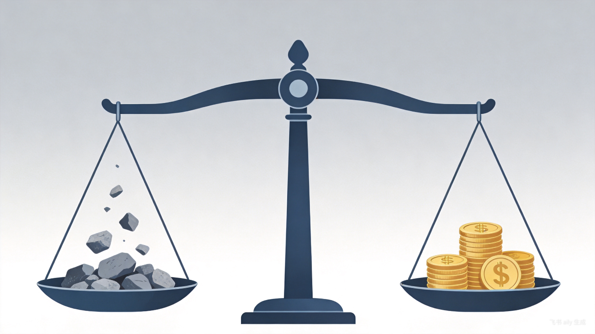

每日投资市场日报 | 2026-05-20
一、今日市场概览
截至2026年5月19日收盘，A股主要指数走出探底回升行情，科创50表现尤为亮眼，单日涨幅达3.81%，显示科技成长风格占优。整体市场呈现修复态势，但内部分化显著。
主要指数表现
| 指数 | 收盘点位 | 涨跌幅 |
|---|---|---|
| 上证指数 | 4169.54 | +0.92% |
| 深证成指 | 15569.91 | +0.26% |
| 创业板指 | 3908.44 | -0.16% |
| 科创50 | — | +3.81% |
| 沪深300 | — | +0.40% |
| 中证500 | — | +0.86% |
| 中证1000 | — | +1.01% |
市场数据概览
外围市场动态
隔夜美股三大指数集体收跌，标普500指数录得三连跌。30年期美债收益率突破5%，刷新2007年以来最高纪录，引发全球债市抛售风暴，对高估值科技板块形成明显压制[7]。
| 指数 | 收盘点位 | 涨跌幅 |
|---|---|---|
| 道琼斯工业指数 | 49686.12 | -0.65% |
| 标普500指数 | 7403.05 | -0.67% |
| 纳斯达克综合指数 | 26090.73 | -0.84% |
| 纳斯达克100指数 | 28994.30 | -0.50% |
二、市场资讯
1. 政策要闻（国内）
国家数据局印发《2026年数字经济发展工作要点》 [1]
核心内容：文件明确将加快建立全国统一数据产权登记制度，印发登记指引，并推动各地建立公共数据授权运营价格形成机制。此举旨在为数据要素市场化配置奠定制度基础。
深交所受理创业板第四套上市标准首单IPO [1]
核心内容：乐聚智能创业板IPO申请获受理，成为首家选用“预计市值不低于50亿元，且最近一年营业收入不低于5亿元”标准的申报企业。此举对新兴产业、未来产业企业对接资本市场具有示范效应。
证监会：长江存储启动IPO辅导 [2]
核心内容：国产存储芯片龙头企业长江存储控股股份有限公司启动IPO辅导，释放半导体产业链持续扩张的积极信号。
2. 海外动态
美联储利率预期：6月暂停，年末加息概率超80% [7]
核心内容：CME美联储观察数据显示，美联储6月维持利率不变的概率为99%。然而，利率互换市场显示，美联储到2026年底的加息概率超过80%，长期利率上行压力持续。
美国出台新一轮涉伊朗制裁措施 [8]
核心内容：美国财政部官网发布新一轮涉伊朗制裁。中国常驻联合国代表呼吁各方保持克制，避免海湾局势进一步升级，地缘政治风险仍需关注。
3. 产业与公司
半导体设备与存储芯片订单火爆 [3]
核心内容：半导体设备、存储芯片订单持续火爆，部分龙头公司业绩同比暴增300%以上，订单已排至2027年，反映下游需求强劲。
谷歌发布Gemini 3.5系列AI模型 [1]
核心内容：谷歌在I/O开发者大会上推出Gemini 3.5系列，其中Gemini 3.5 Flash面向全球用户免费开放。官方数据显示，Gemini AI应用月活跃用户已达9亿。
三、主力资金动向
北向资金
当日流向：净流入超23亿元，主要流向电力、农业板块。
隔夜情况：前一交易日净流出50亿元，今日呈现回流态势，但持续性有待观察。
板块资金流向TOP5（5月20日）
净流入板块
净流出板块
重点个股资金动向
华工科技（光模块）获净流入22.02亿元，工业富联（AI算力）获净流入10.82亿元，药明康德（医药）获净流入10.39亿元，显示大资金在AI硬科技与部分超跌白马股中积极布局。
四、当前市场风口
1. AI硬科技（最强主线）
核心逻辑：政策催化（数字经济工作要点）、业绩支撑（半导体龙头业绩暴增）、资金抱团（单日净流入149亿）形成三重共振。
细分方向：半导体设备、存储芯片、光模块、AI算力为核心赛道。
2. 电力板块
核心逻辑：具备政策支持、业绩稳定及避险属性。京能电力走出5连板（今日断板），连续获得机构、游资与北向资金合力锁仓。
3. 人形机器人
核心逻辑：产业催化事件驱动。杭州柯林公告拟以不超过3亿元收购开普勒机器人41.57%股权，交易完成后将拿下控股权[5]。方正电机作为概念人气龙头表现强势。
